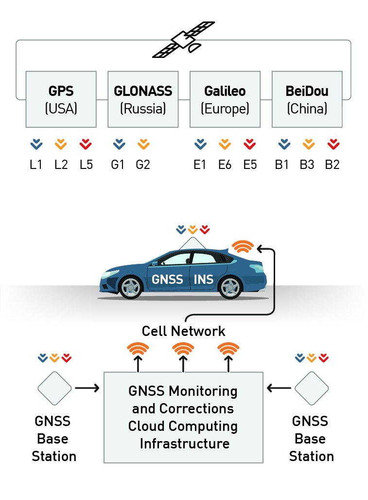

niels@cs.stanford.edu
niels@cs.stanford.edu Google Scholar
Google Scholar Github
Github Youtube
Youtube LinkedIn
LinkedIn W6ZNJ
W6ZNJDevelopments in Modern GNSS and Its Impact on Autonomous Vehicle Architectures
2020 IEEE Intelligent Vehicle Symposium Paper

This paper presents a view of modern GNSS for automotive we developed at Swift Navigation. It surveys the "perfect storm" of developments that unlock lane-level high-integrity GNSS positioning, which enable confident lane-level decision making and maneouver planning for autonomous vehicles.
by Niels Joubert, Tyler GR Reid, Fergus Noble